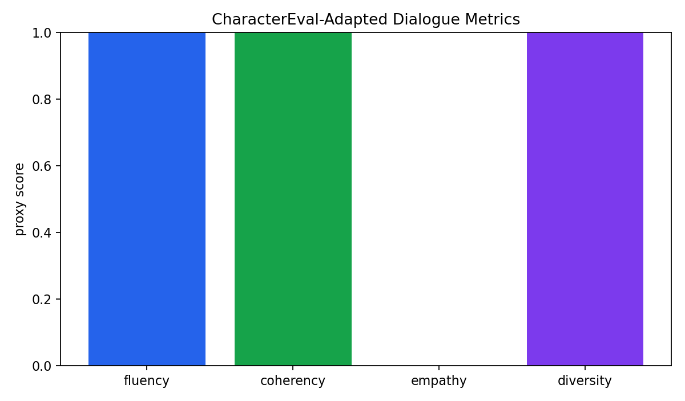
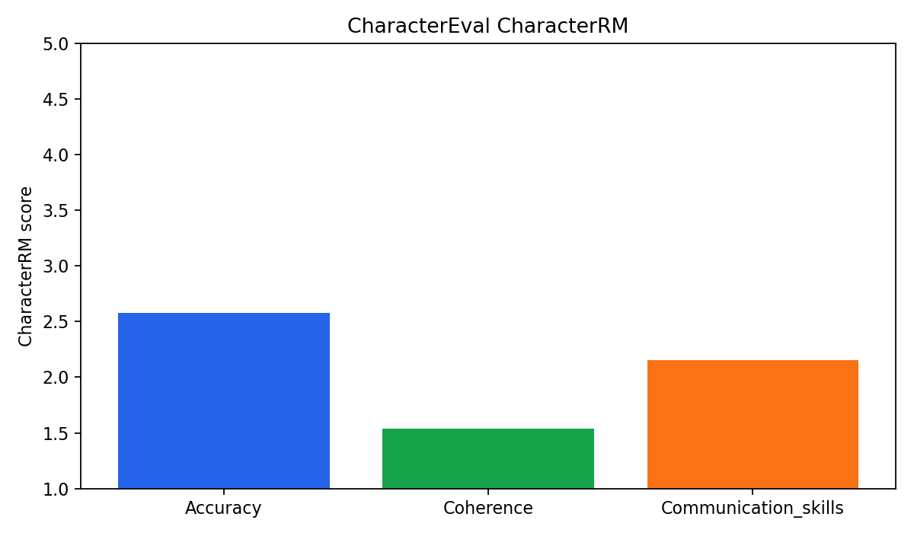
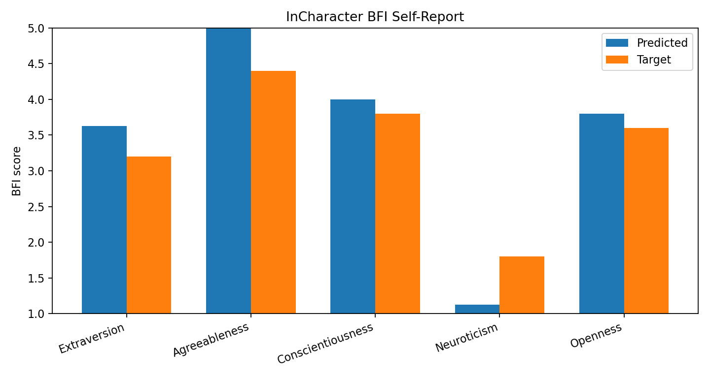

InCharacter self-report uses official BFI scoring rules. CharacterEval output is converted to official generation/generation_trans format; official CharacterRM scoring requires local BaichuanCharRM weights.
Benchmark: CharacterEval Provider: openai
| count | 20 |
|---|---|
| fluency_proxy | 1.0 |
| coherency_proxy | 1.0 |
| empathy_proxy | 0.0 |
| expression_diversity_proxy | 1.0 |
| warning_rate | 0.0 |
| llm_fallback_rate | 0.0 |
| metric_tag_coverage | {"Accuracy": 20, "Coherence": 1, "Communication_skills": 1} |
| charrm_status | "not_run; use CharacterEval BaichuanCharRM weights to produce official reward-model scores" |
| reporting_boundary | "CharacterEval-adapted dialogue metrics; not official CharacterRM score." |
| character_rm | {"count": 22, "device": "cuda", "scores": {"Accuracy": 2.5755, "Coherence": 1.5391, "Communication_skills": 2.1562}, "reporting_boundary": "Official CharacterEval CharacterRM scores for the generated adapted HAI responses."} |
Benchmark: InCharacter Provider: openai
| count | 44 |
|---|---|
| parsed_count | 44 |
| parse_failure_rate | 0.0 |
| warning_rate | 0.0 |
| llm_fallback_rate | 0.0 |
| macro_mae | 0.42 |
| direction_accuracy | 1.0 |
| reporting_boundary | "InCharacter BFI self-report style adapted run; comparable method, not full official interview evaluator." |


